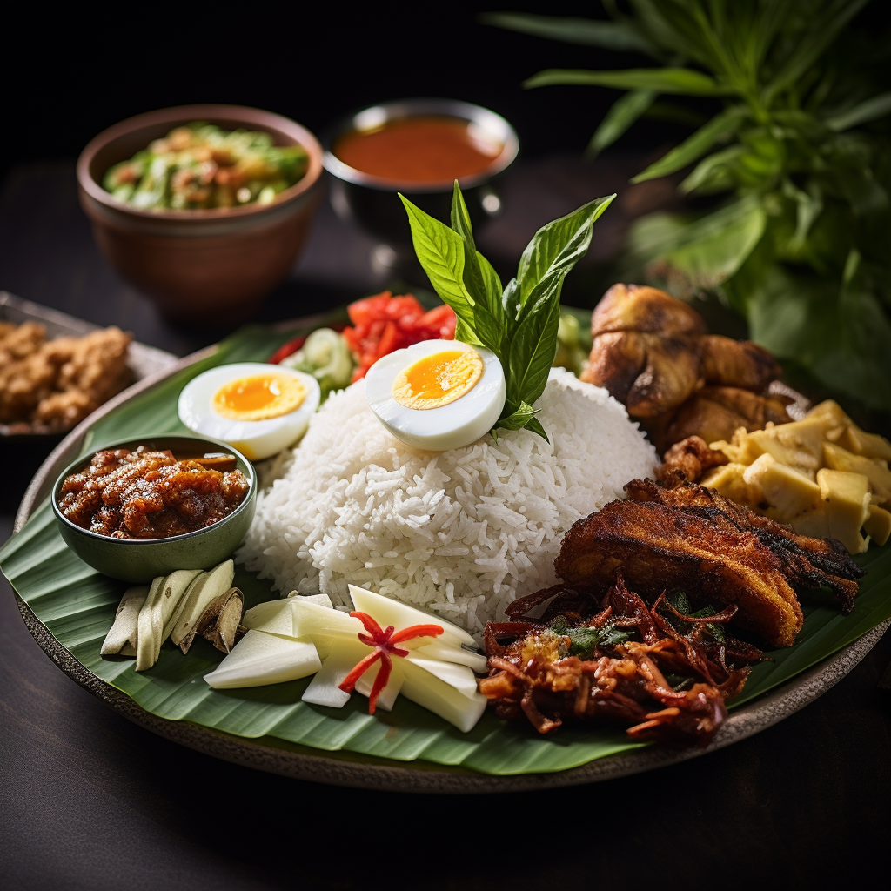

Culinary Kaleidoscope
Embark on a gastronomic journey through Indonesia's diverse culinary traditions, presented in a delightful array of traditional dishes. Sample the flavorful delights of nasi goreng, the fragrant aroma of rendang, the savory skewers of satay, and the refreshing mix of gado-gado. Each dish showcases the fusion of flavors and regional influences, reflecting the country's rich culinary heritage and its people's deep appreciation for food as a unifying cultural experience.